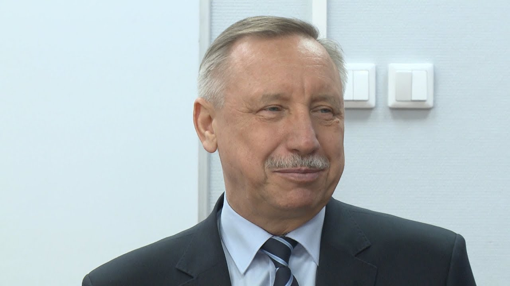
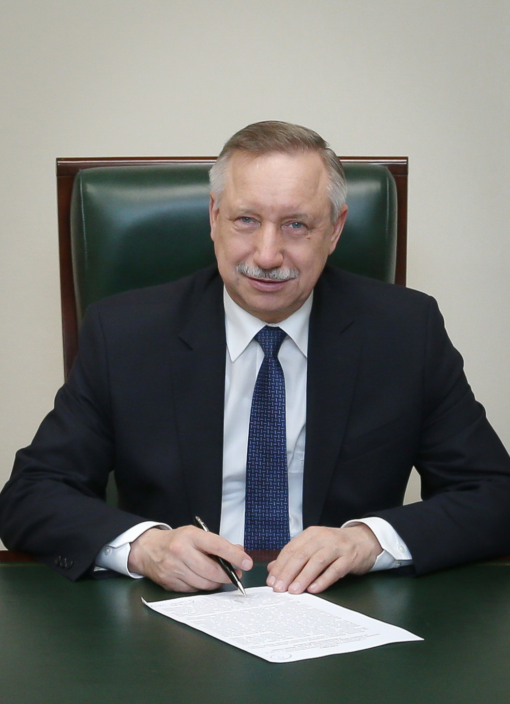

Губернатор Санкт-Петербурга
Беглов Александр Дмитриевич

18 сентября 2019 года официально вступил в должность Губернатора Санкт-Петербурга
Родился 19 мая 1956 г. в Баку.
- 1983 окончил Ленинградский инженерно-строительный институт
- 2003 окончил Северо-Западную академию государственной службы
- 1976–1978: срочная военная служба в Вооруженных Силах СССР
- 1979–1985: работал на инженерно-технических и руководящих должностях в строительных организациях города Ленинграда.
- 1986–1988: заведующий отделом строительства и промышленности строительных материалов исполкома Ленсовета
- 1989–1990: заведующий сектором социально-экономического отдела Ленинградского обкома КПСС.
- 1990–1991: заместитель начальника Главного управления капитального строительства Исполкома Ленсовета
- 1991–1997: главный инженер совместного германо-российского предприятия «Мелазель»
- 1997–1999: старший научный сотрудник, докторант Санкт-Петербургского государственного архитектурно-строительного университета
- 1999–2002: глава территориального управления Курортного административного района Санкт-Петербурга
- 2002–2003: вице-губернатор Санкт-Петербурга – руководитель канцелярии администрации Санкт-Петербурга, исполняющий полномочия губернатора Санкт-Петербурга
- 2003–2004: Первый заместитель полномочного представителя Президента Российской Федерации в Северо-Западном федеральном округе
- 2004–2008: помощник Президента Российской Федерации – начальник Контрольного управления Президента Российской Федерации
- 2008–2012: заместитель Руководителя Администрации Президента Российской Федерации
- 2012-2017: полномочный представитель Президента Российской Федерации в Центральном федеральном округе
- с 25 декабря 2017 года – полномочный представитель Президента Российской Федерации в Северо-Западном федеральном округе
- 3 октября 2018 года назначен временно исполняющим обязанности Губернатора Санкт-Петербурга до вступления в должность лица, избранного Губернатором Санкт-Петербурга.
Действительный государственный советник Российской Федерации 1-го класса
Кандидат технических наук, доктор экономических наук.
Заслуженный строитель Российской Федерации
